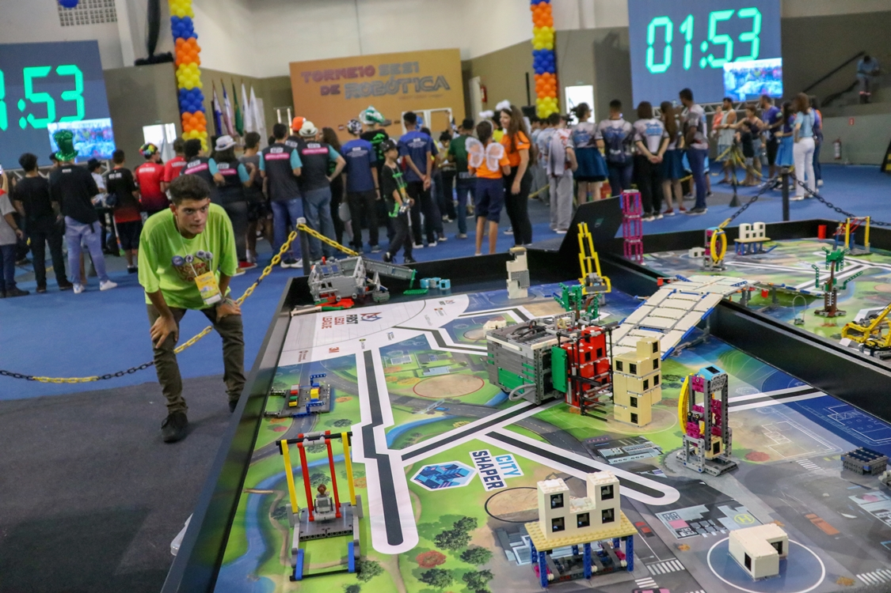

Torneio de robótica FLL
O Torneio de Robótica FIRST® LEGO® League (FLL) é um programa internacional voltado para crianças de 9 a 16 anos, criado para despertar o interesse dos alunos em temas como ciência e tecnologia dentro do ambiente escolar.
Os temas são diferentes a cada temporada - em 2020, por exemplo, eles foram desafiados a repensarem espaços para exercícios, competições e brincadeiras.
Os jovens, liderados por dois adultos, precisam trabalhar em sintonia tendo como base valores como respeito, ganho mútuo e competição amigável. Seguindo regras feitas especificamente para cada temporada, eles constroem robôs baseados na tecnologia LEGO Mindstorm, que devem ser programados para cumprir uma série de missões.
Para participar, os times devem ter de dois a dez integrantes, que podem estar associados a uma escola, um clube, uma organização ou simplesmente ser formado por um grupo de amigos. O SESI recomenda o número mínimo de quatro competidores por equipe.
A categoria Challenge da FIRST LEGO League é operacionalizada, no Brasil, pelo SESI, desde 2004. O programa tem ainda outras duas categorias, que são operacionalizadas, no Brasil, pela Educacional - Ecossistema de Tecnologia e Inovação: Discover (3 a 6 anos) e Explore (6 a 10 anos).
